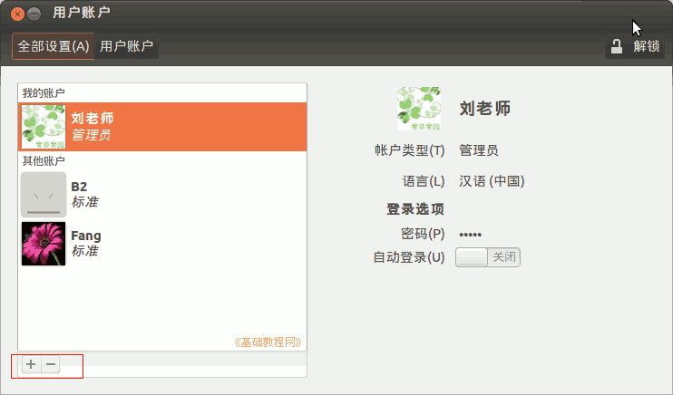

2014-2015 第一学期七年级文字处理和网页教学设计
作者：TeliuTe 来源：基础教程网
一、认识班图系统 返回目录 下一课
（一）教学设计
1、学习目标：学会Ubuntu基本操作，校园网操作，中英文指法
2、注意事项：绕过弯来，既不要跳也不要落，一楼过了二楼
3、教学过程：
1）教师准备学案和板书；
2）学生整队进入，开机抄黑板上笔记；
3）教师讲解板书演示操作；
4）学生打指法、日志、完成操作；
5）教师打勾记录学生指法成绩，检查日志和操作；
注：学生抄完笔记就开始打指法、日志，老师讲完后再继续完成；
（二）板书设计(学生笔记)
教学7-1 2014年08月27日 星期三 10:56
第1课 认识班图系统
1、找到 a2014a，密码 201412 回车（用大键盘输入）
2、点右上角人像，用户账户
3、点头像、用户名、密码、更改
4、关机在右上角
操作图示：

（三）课后记
操作指南
校园网：192.168.12.250
1、中文选搜狗拼音
2、点左上角圆圈输入le，点绿叶
3、输入，最上边，点文件，保存 1
--
上午把那两个机子的flash装好，似乎是网络的问题，不能下载tar.gz的包
手动下载下来运行sudo dpkg-reconfigure flashplugin-installer输入路径（不要文件名）
--
A5的电源问题还要解决一下，估计是电池没电了，奇怪了真是老出现这个问题
插拔电源好几下才启动起来，先放那里好了，等空闲了再换个电池
--
小键盘输密码不会用Numlock灯，中文输入法的Ctrl+空格不会，关键变休眠，改密码会卡着先不改，改完密码忘记了
4班的汉字比3班要强些，两个任务，先改密码，再输入绿树叶
--
学生急躁，进来就点登录，说来是笔记有点问题，换成找到还好，
输完密码不知道点啥了，也不知道按回车，练的少也是
--
强调先不要点鼠标，抄完笔记后照着做，养成习惯
有些学生是通过不断问老师来快速完成任务，这样的要注意下
--
切换中文键盘有问题，系统的问题也是
登录女生问题多些，找不到也不知道怎么找自己的用户名，用过一回就好了
--
开机后有些会卡住，要按下回车键才能继续
做完的不知该干什么，让自己到里面找也不知道，前面讲的时候，说一下程序都在左边
--
有些进到校园网里找游戏，有些把系统里的游戏找出来，有些把扫雷找出来
都找不到的让到leafpad里练指法，当然不练了
--
做完以后就有些乱了，把基准的找好，容易乱的就不做了
开头的习惯一定要养成好
--
进来前要求下，第一节课把座位排好，东西看好别丢，碰到问题别吵自己动脑解决，记笔记学会学习习惯
进去一组一组，第一组后面的男生拨到中间后面或者女生组里，这边人不要太多，顾不过来
--
让体育委员外面整好队，我指定学生往里进，第一个做好都好，第一个跑后面，都跟着乱
进的时候说一下开机后就抄笔记，有的就等着机子开，忘了抄笔记
--
登录的时候挨着检查，登到访客里的，让注销了重新登，3、1班好多登访客的，训一顿
有两个改完密码就忘记的，进客人会话里，重新改密码
--
开始讲一个，如果学生动作快，把打汉字的也演示了
整体来看还可以，大多数都输完保存好了，演示的时候把italc缩成小窗口，最小化会出问题
返回目录 下一课
本教程由86团学校TeliuTe制作|著作权所有
基础教程网：http://teliute.org/
美丽的校园……
转载和引用本站内容，请保留作者和本站链接。